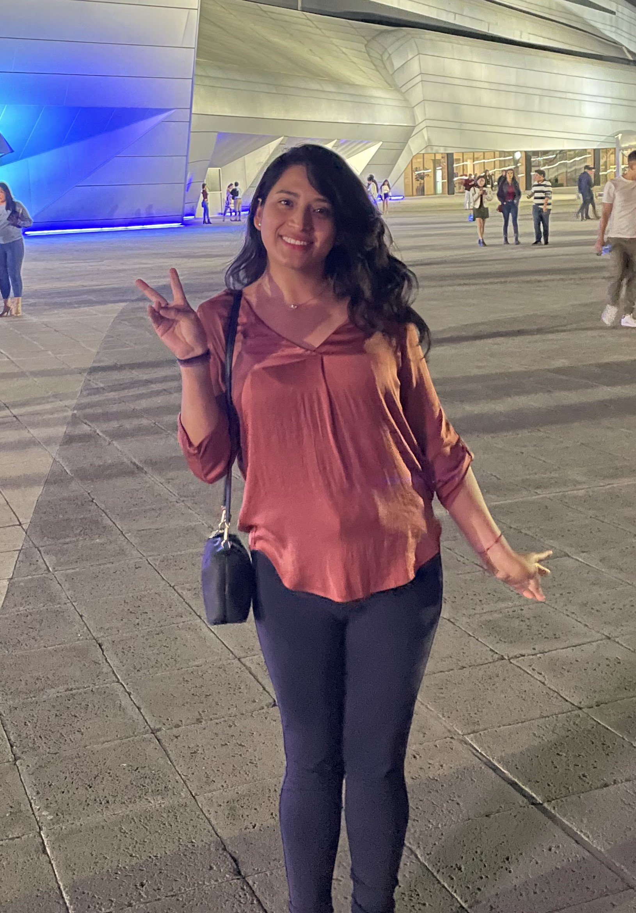

María José López Delgado
Soy estudiante en la Universidad Panamericana, estudie la carrera de Animación y Videojuegos.
Actualmente estoy estudiando la especialidad en efectos visuales.
Soy una persona que no se rinde facilmente, me adapto bien a cualquier reto u obstaculo,
buscando siempre la forma de solucionarlo. Creo que todo lo que nos pasa en la vida nos ayuda a crecer como persona de manera
profesional e individual.
Me apasiona mucho el arte y la musica, creo que es una forma muy hermosa de expresar
nuestros pensamientos y sentimientos.
- Educación
-
Instituto México de Puebla (Generación 2015 - 2018)
Organizadora: Eventos de liderazgo y programa de las naciones unidas
Líder: Multiples eventos, entre ellos destacan misiones o DIAC (Grupo para formar lideres y emprendedores)
Universidad Panamericana (2018 - Actualidad)
Ingeniería en Animación y Diseño de Videojuegos 2018 - 2022
Especialidad en Efectos Visuales 2023 - Actualidad
Parte de: Coro UP 2018 - 2022 y Zumo Robots 2018 - 2020
-
- Experiencia laboral
-
Freelancer
Aplicación UPwork, Remoto, Abril 2020 - Enero 2023
- Animaciones para contenido audiovisual
- Edición y creación de contenido audiovisual
- Organización y elaboración de transcripciones
- Elaboración y animación de logos para empresas
Instituto México
Practicante, Puebla, Enero-2021 - Abril-2021
- Elaboración de contenido audiovisual
- Animaciones 2D y 3D de la mascota escolar
- Creación y organización de nuevo contenido
- Colaboración en redes sociales y eventos online
- Animaciones de fondos 2D para contenido audiovisual
Relaciones Publicas
Becaria, CDMX, Agosto 2018 - Enero 2020
- Monitoreo del impacto publicitario y económico
- Creación y publicación de contenido publicitario
- Ejecución de eventos importantes para publicidad
-
- Habilidades y Conocimientos
-
Habilidades
- Liderazgo
- Eficiente
- Honestidad
- Trabajadora
- Ganas de crecer
- Buena disposición
- Capacidad de análisis
- Pensamiento creativo
- Capacidad de colaborar
- Resolución de problemas
- Actitud y mente abierta
Paquetes Computacionales
- V Ray
- Maya
- Word
- Excel
- Krita
- Blender
- OpenToonz
- Power Point
- 3D Studio Max
- Adobe Premiere
- Adobe Photoshop
- Microsoft Office
- Adobe Illustrator
- Adobe After Effects
- DaVinci Resolve Studio
Idiomas
- Español: Lengua Madre
- Ingles: Nivel Avanzado
- Alemán: Nivel Basico